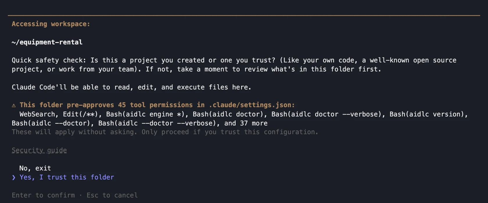
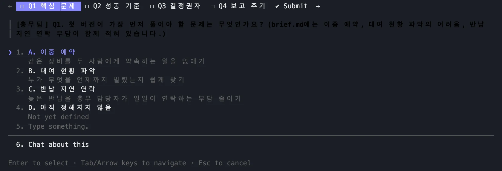
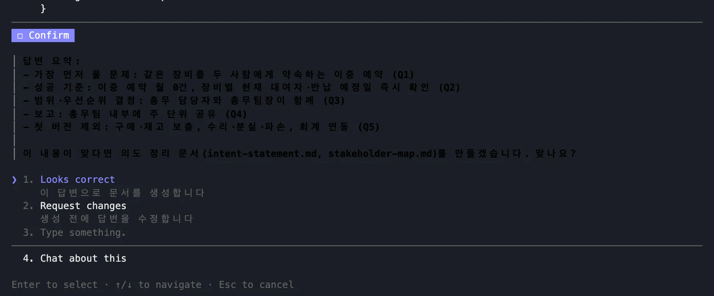
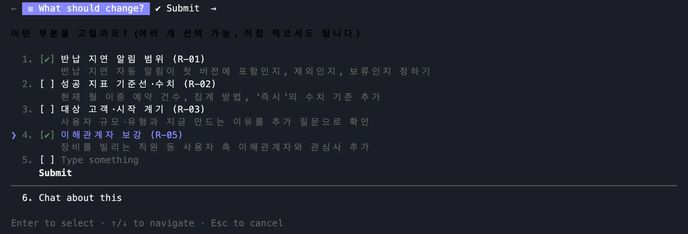
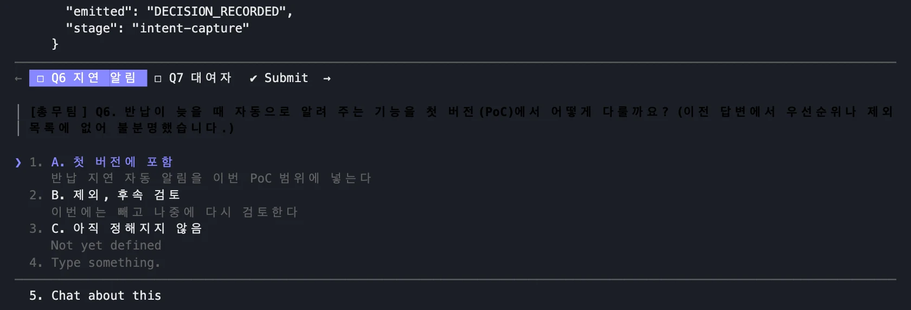
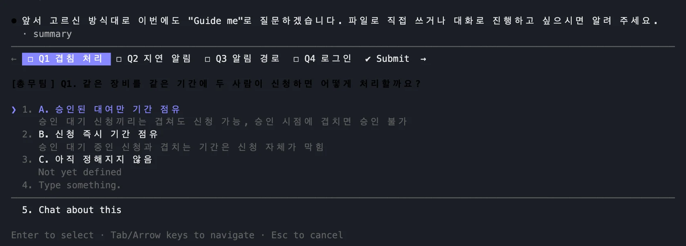
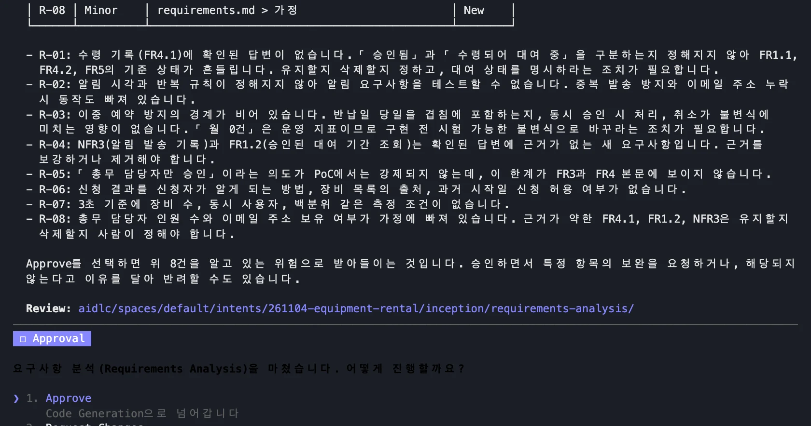
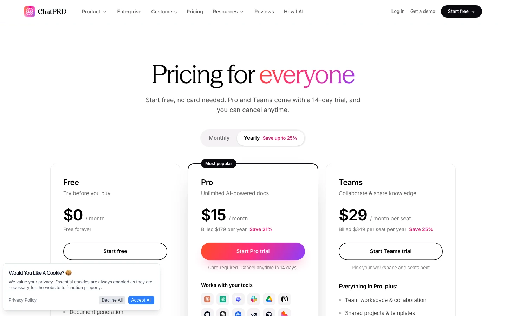

AWS AI-DLC Workflows를 Claude Code에 연결해 구상 글에서 의도 문서와 요구사항을 만듭니다. AI의 역질문, 검토 에이전트, 승인 게이트를 실제 실행 화면으로 봅니다.
역질문: AI가 사람에게 묻는 질문#
역질문은 AI가 사람에게 묻는 질문입니다. 우선순위와 범위, 기존 환경, 용어와 업무 규칙, 성공 기준을 묻습니다. 답하다 보면 내가 정하지 않은 것이 드러납니다. 인터뷰의 가치는 바로 이 지점에 있습니다.
우선순위와 범위
첫 버전이 무엇을 풀고, 무엇을 뺍니까?
기존 환경과 제약
기존 코드, 트래픽, 인프라는 어떻습니까?
용어와 업무 규칙
"늦음"의 기준은? 겹치는 신청은 어떻게 합니까?
성공 기준
무엇으로 잘 되었다고 판단합니까?
질문에 답하다 보면 내가 정하지 않은 것이 드러납니다. 인터뷰의 가치는 이 지점에 있습니다.
5개 페이즈, 33개 스테이지, 승인 게이트#
AI-DLC는 AWS가 공개한 오픈소스 워크플로입니다. 다섯 페이즈, 서른세 스테이지로 되어 있고, 사람이 승인해야 다음 단계로 넘어갑니다. 범위를 골라 단계를 줄일 수 있습니다. 오늘은 가장 짧은 poc를 골라, 의도 정리와 요구사항 분석까지 하고 코드 생성 앞에서 멈춥니다.
초기화
3개
아이디어
7개
착수
9개
구축
7개
운영
7개
| 범위(scope) | 단계 | 쓰임 |
|---|---|---|
| feature | 30 / 30 | 실제 기능 전체 |
| workshop | 23 / 30 | 교육 진행 |
| mvp | 20 / 30 | 첫 제품 증분 |
| poc (오늘) | 5 / 30 | 가장 짧은 경로 |
단계 수는 초기화 3개를 뺀 값입니다. 우리는 의도 정리와 요구사항 분석까지 하고 코드 생성 앞에서 멈춥니다.
확인 버전 2.11.2 · MIT-0 · Claude Code, Kiro, Codex, Cursor, opencode, Copilot에서 동작
설치하고 프로젝트에 연결합니다#
설치는 명령 세 줄입니다. 빈 폴더를 만들고 구상 글을 저장한 뒤, 클로드 코드에 연결합니다. 처음 열면 이 폴더가 도구 권한 45개를 미리 허용한다는 경고가 나옵니다. 내가 만든 실습 폴더라서 허용하지만, 회사 저장소라면 팀이 이 목록을 검토해야 합니다.
curl -fsSL https://github.com/awslabs/aidlc-workflows/releases/latest/download/install.sh | sh
mkdir equipment-rental && cd equipment-rental && git init # brief.md 를 여기에 저장
aidlc config --harness claude && aidlc doctor
claude

이 화면을 읽고 넘어갑니다
설정이 도구 권한 45개를 미리 허용합니다. 내가 만든 실습 폴더라서 허용합니다.
회사 저장소에 넣을 때는 이 목록을 팀이 검토합니다.
구상 글을 주면 AI가 먼저 묻습니다#
구상 글과 함께 범위를 지정해 시작합니다. AI는 바로 문서를 쓰지 않고 먼저 묻습니다. 글에 문제가 셋 적혀 있으니, 첫 버전이 무엇을 풀지 고르라고 합니다. 우리는 이중 예약을 골랐습니다. 답하는 방식은 한 문항씩, 파일 편집, 자유 대화 중에 고릅니다.
/aidlc --scope poc brief.md를 읽고 사내 장비 대여 서비스를 설계하려고 합니다.
모든 질문과 문서는 한국어로 해 주세요.

글에 문제가 셋 적혀 있어 무엇이 먼저인지 묻습니다. 우리 답은 A. 이중 예약입니다.
질문은 파일로도 저장됩니다. 답하는 방식은 셋입니다: 한 문항씩, 파일 편집, 자유 대화.
우리 실행의 답: 성공 기준 A·B, 결정은 담당자와 팀장이 함께, 주 단위 공유, 구매·수리·회계 제외
문서의 문장마다 근거가 붙습니다#
답을 모으면 요약을 보여 주고 맞는지 확인합니다. 만들어진 문서를 보면 문장 끝에 근거가 붙어 있습니다. Q1은 첫 번째 질문의 답이라는 뜻입니다. 구상 글에 적혀 있어도 답으로 확인한 내용만 들어가므로, AI가 지어낸 문장을 쉽게 찾아낼 수 있습니다.

intent-statement.md
첫 버전이 가장 먼저 풀어야 할 문제는 같은 장비를 두 사람에게 약속하는 이중 예약입니다. [Q1]
이중 예약 건수가 월 0건이 된다 [Q2]
구상 글에 적혀 있어도 답으로 확인한 내용만 문서에 들어갑니다. 그래서 AI가 지어낸 문장을 쉽게 찾아낼 수 있습니다.
다른 에이전트가 문서의 빈틈을 찾습니다#
문서가 나오면 기획 담당 에이전트가 따로 검토합니다. 실제로 다섯 건을 찾았고, 판정은 아직 준비되지 않음이었습니다. 반납 지연 알림이 첫 버전에 들어가는지 어디에도 없다는 지적은 우리가 답하면서 놓친 틈입니다. 장비를 실제로 빌리는 직원이 이해관계자에서 빠졌다는 것도 찾았습니다.
| ID | 심각도 | 실제로 찾아낸 내용 |
|---|---|---|
| R-01 | Major | 반납 지연 알림이 첫 버전에 들어가는지 어디에도 없습니다 |
| R-02 | Major | 지표에 기준선과 집계 방법이 없고 "즉시"에 수치가 없습니다 |
| R-03 | Major | 대상 고객이 "회사 내부 사용자"뿐이고 시작 계기가 얇습니다 |
| R-04 | Minor | 문제 정의가 해결책을 말하고, 누가 어떤 피해를 보는지 없습니다 |
| R-05 | Minor | 장비를 실제로 빌리는 직원이 이해관계자에서 빠졌습니다 |
판정은 NOT-READY였습니다. R-01은 우리가 Q2에서 알림을 고르지 않아 생긴 틈입니다. 혼자 답할 때 놓치는 곳을 이렇게 잡습니다.
승인 게이트에서 사람이 고릅니다#
승인 게이트에서 사람이 결정합니다. 승인하면 남은 지적을 알고 있는 위험으로 받아들이는 것입니다. 우리는 수정 요청을 눌러 두 항목을 골랐습니다. 그러자 AI가 지연 알림을 어떻게 할지, 누가 빌리는지 다시 묻고 문서를 고쳤습니다. 나머지 지적은 위험으로 안고 승인했습니다.


Approve
남은 지적을 알고 있는 위험으로 받아들이고 넘어갑니다.
Request Changes
우리는 R-01과 R-05를 골랐습니다. AI가 Q6, Q7을 다시 묻고 문서를 고칩니다.
답: 지연 알림은 첫 버전에 포함, 빌리는 사람은 일반 직원 전체. 나머지는 위험으로 안고 승인했습니다.
업무 규칙 질문이 요구사항이 됩니다#
요구사항 단계에서는 업무 규칙을 묻습니다. 같은 기간을 두 사람이 신청하면 어떻게 할까요? 우리는 승인된 대여만 기간을 차지한다고 답했습니다. 이 답이 요구사항 문장과 인수 조건이 되었고, 2부의 데이터 모델을 결정합니다. 요구사항 문서에는 범위 밖 목록과 열린 질문까지 나옵니다.

requirements.md FR3.2
승인된 대여만 해당 장비의 기간을 차지한다. 이미 승인된 대여와 기간이 겹치는 신청은 승인할 수 없다.
Given 5월 1일~3일 대여가 승인되어 있다 When 5월 2일~4일 신청을 승인하려 한다 Then 승인이 거부되고 겹친 대여가 표시된다
우리는 A. 승인된 대여만 기간 점유를 골랐습니다. 이 답 하나가 2부의 데이터 모델을 정합니다.
결과: 기능 요구사항 6묶음, 비기능 3개, 범위 밖 목록, 열린 질문 5개. 인수 조건이 Given/When/Then으로 나옵니다.
코드 생성 앞에서 멈추고 지적을 읽습니다#
요구사항도 검토 에이전트가 읽고 여덟 건을 찾았습니다. 답한 적 없는 수령 기록이 문서에 들어간 것까지 잡아냅니다. 반납일 당일이 겹침에 포함되는지도 아직 정하지 않았습니다. 이 문제는 2부에서 다시 만납니다. 승인하면 코드 생성으로 넘어가므로, 오늘은 여기서 멈추고 파일을 가져갑니다.

R-01 수령 기록은 답한 적 없는데 문서에 들어갔습니다.
R-03 반납일 당일이 겹침에 포함되는지 정하지 않았습니다.
R-07 3초 기준에 장비 수와 동시 사용자 조건이 없습니다.
Approve를 누르면 코드 생성으로 넘어갑니다. 오늘은 누르지 않고 파일을 다음 단계로 가져갑니다.
실제 소요: 의도 정리 수정 1회를 포함해 여기까지 약 20분. 모델은 Sonnet을 썼습니다.
ChatPRD: 기획자가 웹에서 바로 쓰는 인터뷰#
ChatPRD는 터미널 없이 웹에서 쓰는 기획 도구입니다. 무료는 대화 3회이고, 프로는 연 결제 기준 월 15달러입니다. 이 교재를 만들 때는 가입하지 않아 실행 화면을 확인하지 못했습니다. 수업에서는 구상 글을 붙여 넣고 빠진 점을 물어본 뒤, AI-DLC의 질문과 비교해 봅니다.

| 요금 | 내용 |
|---|---|
| Free | 대화 3회, 기본 모델 |
| Pro $15 | 연 결제, 무제한, MCP 연결 |
| Teams $29 | 좌석당, 공유·협업 |
수업에서 해 볼 일
- 가입 후 brief.md를 붙여 넣습니다
- "빠진 점과 예외를 먼저 물어봐 줘"
- AI-DLC의 질문과 비교합니다
이 교재를 만들 때는 가입하지 않아 화면을 확인하지 못했습니다. 무료는 대화 3회뿐이니 수업에서는 한 번에 묶어 묻습니다.
1부 확인 문제#
1부를 정리합니다. 문서 끝의 Q1은 근거 표시이고, 승인을 누르면 남은 지적은 알고 있는 위험이 됩니다. 쉬는 시간 전에 의도 문서와 요구사항 파일이 있는지 확인합니다. 이 파일이 2부의 입력입니다.
| 문제 | 답 |
|---|---|
| 문서 끝의 [Q1]은 무엇을 뜻합니까? | 첫 번째 질문의 답이 이 문장의 근거입니다 |
| Approve를 누르면 남은 지적은 어떻게 됩니까? | 알고 있는 위험으로 받아들인 것이 됩니다 |
| poc 범위에서 우리가 멈춘 지점은? | 코드 생성 직전, 요구사항 승인 게이트입니다 |
쉬는 시간 전에 확인합니다
- intent-statement.md와 requirements.md가 있습니다
- 열린 질문 중 내가 답할 수 있는 것을 하나 골랐습니다